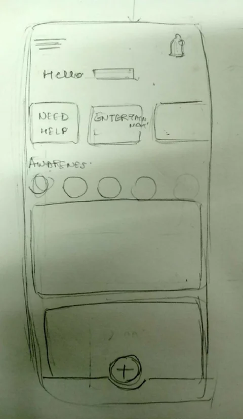
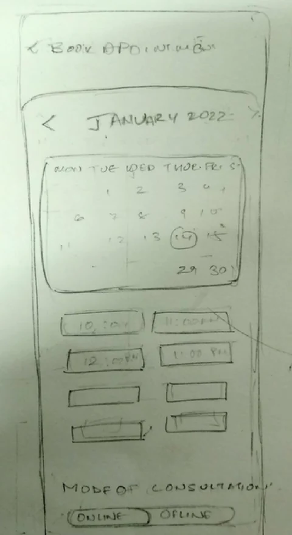
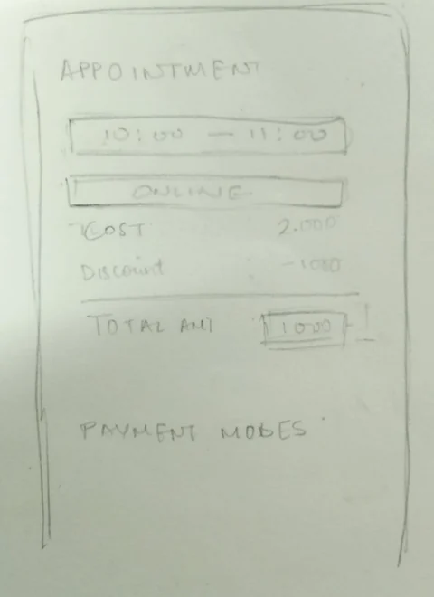

Home
A greeting, a row of choices, then a feed. The order did not change.


Booking
Month, dates, time slots, then online or offline at the bottom.


Confirmation
Time and mode, then cost, discount and total, then how to pay.